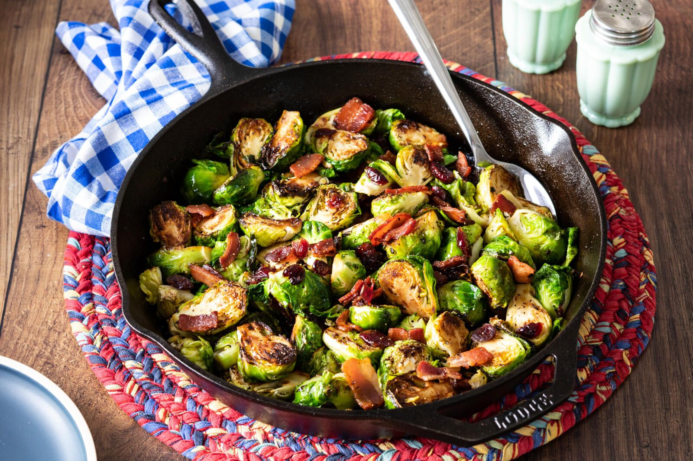

Brussels Sprouts with Bacon

Crispy, Mouth-Watering Brussels Sprouts
If you hate Brussels sprouts, you've never had them like this. Fried in bacon grease, then thrown in the oven to get them perfectly cooked, this recipe will have you eating Brussels Sprouts every chance you get. Trust me. I wasn't a fan either until I tried them like this.
Give it a try!
Ingredients
- About 1 lb. Brussels Sprouts, cut in halves
- 3-4 pieces of bacon
- 1-2 tbsp salted butter
- garlic powder
- (optional) honey or maple syrup
- (optional) feta cheese
- salt and pepper
Directions
- Preheat your oven to 350.
- Start by frying up your bacon. You want it to be a little crispy, but not blackened or dry.
- Remove bacon from the pan, leaving the bacon grease. Place bacon on a plate covered in paper towel to cool.
- Reduce the heat to medium and add your chopped Brussels sprouts to the bacon grease in the pan. Be careful—it may pop grease as you pour.
- Toss Brussels sprouts to coat them in the bacon grease and let it cook for a few minutes.
- Crumble you bacon into small pieces and put them in an oven-safe dish (a small casserole dish works perfectly).
- Add garlic powder, butter, salt and pepper to the Brussels sprouts. You may also add a drizzle of honey or maple syrup if you want to add a bit of sweetness. Toss it all together until the Brussels sprouts begin to brown. If they get a little burned, don't worry. It can actually add to the flavor to get the outer leaves a little crispy.
- Pour Brussels sprouts into the oven-safe dish containing your bacon and toss them together. You may add some feta cheese to the top if you wish.
- Bake for about 15-20 minutes.
- Serve and enjoy!